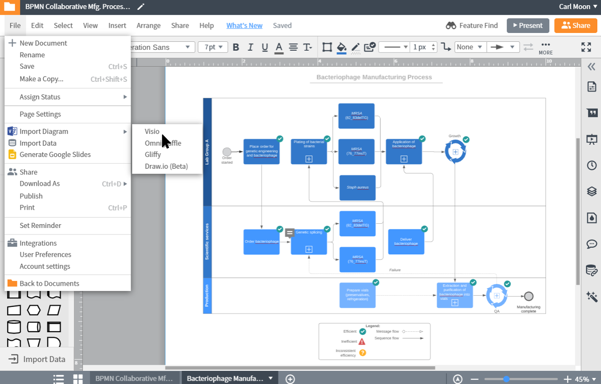
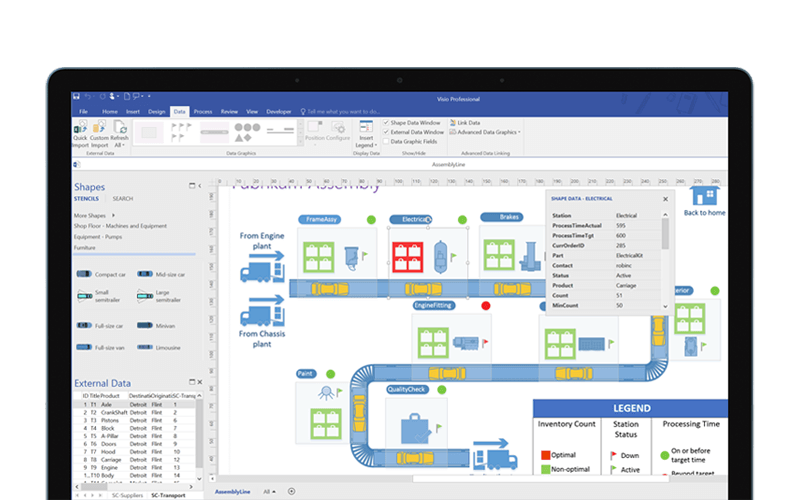
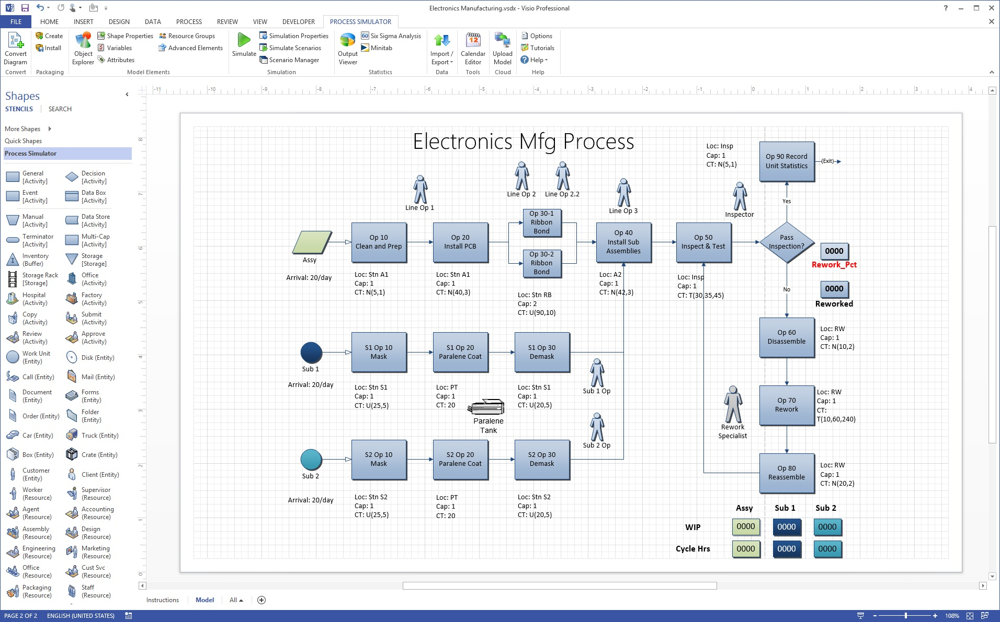

| MICROSOFT VISIO |
Apresentação
| O Microsoft Visio é um software para desenhar uma grande variedade de diagramas. Estes incluem fluxogramas, organogramas, projetos, plantas, diagramas de fluxo de dados, diagramas de fluxo de processos, processos de negócios, modelagem, diagramas de raias, mapas 3D e muitos mais. Ele é um produto da Microsoft, vendido como um complemento para o MS Office. |
 |
|  | Todas as edições compartilham funcionalidades com o MS Office Word e Excel, como opções de cor e texto, e permitem a alimentação de dados diretamente do MS Excel e Access. Como com outros softwares de diagrama, o Visio oferece uma biblioteca de templates e formas para vários tipos de gráficos para ajudá-lo a começar. Observação: o Microsoft Visio não está relacionado à Vizio Inc. (com "z"), que fabrica TVs e outros produtos eletrônicos. |
| Como começou
|
 |
Para saber mais acesse: https://www.lucidchart.com/pages/pt/visio/o-que-e-microsoft-visio